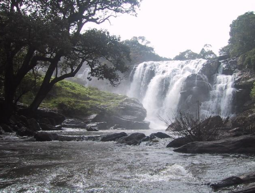
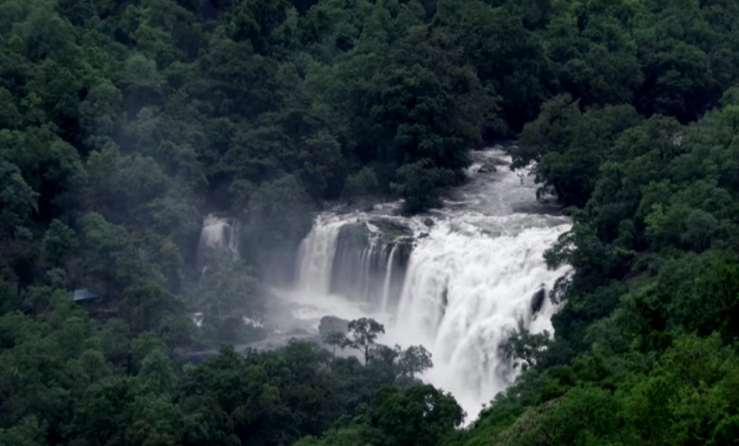
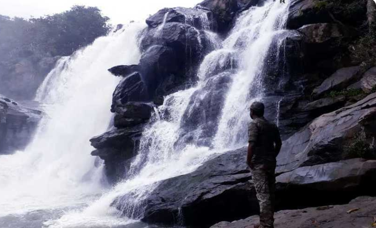
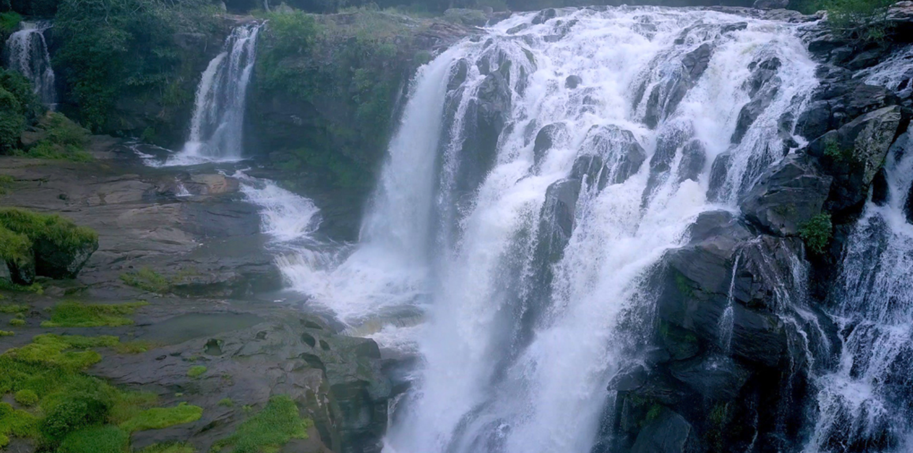
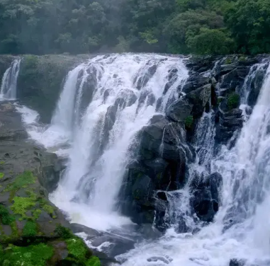

Thoovanam Falls is a beautiful waterfall located in the Chinnar Wildlife Sanctuary in the Idukki district of Kerala. It is formed by the Pambar River and is surrounded by forests and rocky hills. The waterfall is known for its natural beauty, peaceful environment, and trekking paths. Visitors can enjoy the scenic view and the refreshing atmosphere while exploring the area. Thoovanam Falls is a perfect destination for nature lovers and adventure seekers.





Thoovanam Falls is one of the most beautiful waterfalls in Idukki District, Kerala. It is located inside the Chinnar Wildlife Sanctuary near Marayoor. The waterfall is formed by the Pambar River and cascades from a height of about 84 feet. It is famous for its scenic beauty, trekking trails and rich biodiversity.
The name "Thoovanam" comes from the Malayalam language and refers to the mist-like spray created by the falling water. The waterfall is known for its cool atmosphere and peaceful surroundings.
Thoovanam Falls has been an important natural attraction within Chinnar Wildlife Sanctuary. It became popular among trekkers and nature lovers because of its untouched forests and beautiful trekking route through the sanctuary.
Thoovanam Falls is famous for its guided trekking trail of about 4 kilometres through the forests of Chinnar Wildlife Sanctuary. Visitors can enjoy beautiful landscapes, wildlife and the refreshing waterfall during the trek.
The area is rich in dry deciduous forests, medicinal plants, sandalwood trees, bamboo and many rare plant species. The sanctuary supports diverse plant life throughout the year.
Today, Thoovanam Falls is one of the most attractive eco-tourism destinations in Kerala. It is popular among trekkers, photographers and wildlife enthusiasts because of its natural beauty and peaceful forest environment.